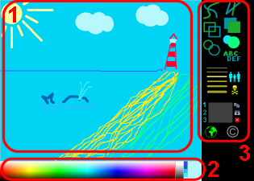
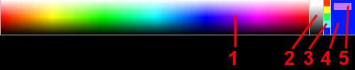
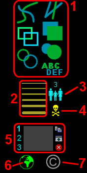
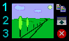
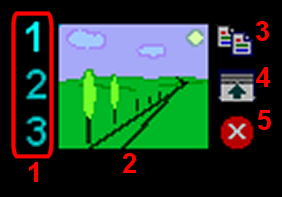
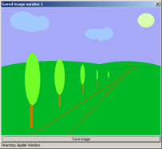
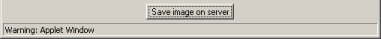
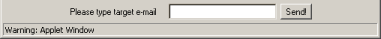
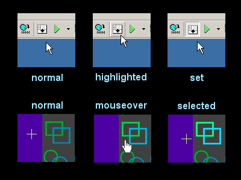
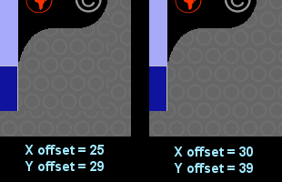

|
Drawboard Manual
(v 1.4 Christmas Edition)
last changes: 25 Dec 2002
Content
- License
- 1. Operating manual
- 1.1. Blackboard
-
1.2. Colorpicker
- 1.2.1. Rainbow
- 1.2.2. Grayscale
- 1.2.3. Old color set
- 1.2.4. Current color
- 1.2.5. New color preview
-
1.3. Menu
- 1.3.1. Tool select
- 1.3.2. Thickness select
- 1.3.3. People counter
- 1.3.4. Reset button
- 1.3.5. Clipboard
- 1.3.6. Connection indicator
- 1.3.7. Copyright information
-
1.4. Clipboard
- 1.4.1. Clipboard selector
- 1.4.2. Clipboard preview
- 1.4.3. Copy button
- 1.4.4. Show clipboard
- 1.4.5. Empty clipboard
-
1.5. The "onlyview" mode
- 1.5.1. "Onlyview" applet configuration
- 1.5.2. Useful informations
- 2. Installation
- 2.1. Paths and directories
- 2.2. HTML file
- 2.3. Running server
- 2.4. Server command line switches
- 2.5. Image saving
- 2.5.1. Why PNG format?
- 2.5.2. How about Unix and Windows differences?
- 2.5.3. From which directory should I run server?
- 2.5.4. What is the image filename?
- 2.5.5. How can user see saved images?
- 2.5.6. How can user know saving was successful?
- 2.5.7. Server crashes after a few saved images!
- 2.6. Image e-mailing
- 2.6.1. Why this is option is off by default?
- 2.6.2. What is SMTP host?
- 2.6.3. What is my e-mail address used for?
- 2.6.4. How can user know that image was successfully sent?
- 2.6.5. Does e-mail sending affect other activities?
- 2.7. Modifying sources
- 2.7.1. Recompiling Drawboard
- 2.7.2. Creating JAR package
- 3. Applet options
- 3.1. Applet size
- 3.2. Applying new skin
- 3.2.1. Creating new skin
- 3.2.2. Creating skin definition file
- 3.2.3. Transparent menu
- 3.3. Applet options
- 3.3.1. Communication port number
- 3.3.2. Initial background color
- 3.3.3. Initial pen color
- 3.3.4. People counter color
- 3.3.5. Menu background color
- 3.3.6. Empty menu clipboard color
- 3.3.7. Skin definition
- 3.3.8. Menu background image definiton (transparency option)
- 3.3.9. Menu background image transparent color (transparency option)
- 3.3.10. Background image X offset (transparency option)
- 3.3.11. Background image Y offset (transparency option)
- 3.3.12. "Onlyview" mode switch
- 3.3.13. Language selection
- 4. FAQ
- 5. Download
- 6. Feedback
License
Drawboard - Java applet used to make graphical teleconferences
Copyright (C) 2001 Tomek "TomasH" Zieliñski, tomash@fidonet.org.pl
Download - see project homepage at www.sourceforge.net/projects/drawboard
This is free software; you can redistribute it and/or
modify it under the terms of the GNU Lesser General Public
License as published by the Free Software Foundation; either
version 2.1 of the License, or (at your option) any later version.
This software is distributed in the hope that it will be useful,
but WITHOUT ANY WARRANTY; without even the implied warranty of
MERCHANTABILITY or FITNESS FOR A PARTICULAR PURPOSE. See the GNU
Lesser General Public License for more details.
You should have received a copy of the GNU Lesser General Public
License along with this software; if not, write to the Free Software
Foundation, Inc., 59 Temple Place, Suite 330, Boston, MA 02111-1307 USA
This software uses a modified PngEncoder library created by J. David Eisenberg and
PNGImageProducer library created by Jason Marshall.
1. Operating manual
This is the standard Drawboard screen.

As you see, it can be divided to three parts: blackboard, colorpicker and menu.
1.1. Blackboard
There isn't much to write about. Blackboard is area, when you can draw.
Color of your pen is selected with colorpicker, tool - by clicking menu. Normal cursor style is
crosshair. When cursor is in "WAIT" mode, you have to wait for connection with server.
NOTE: you can pick color by clicking with right mouse key on blackboard.
1.2. Colorpicker
This is the colorpicker:

It can be divided to five parts: rainbow, grayscale, old colors set, current color and new color preview.
1.2.1. Rainbow
This is the hi-color palette. Click to set current color.
1.2.2. Grayscale
This is the grayscale palette. It includes pure white and black colors. Click to set current color.
1.2.3. Old color set
When you click a rainbow or grayscale, you select new color. This color is also inserted into old color
set. Four earlier colors are moved one cell up (fifth, oldest color is lost). You can revert to one of
the old colors by clicking selected square. In this case the color set won't be changed.
1.2.4. Current color
This rectangle shows current color. You can select new color by clicking rainbow, grayscale or old color set.
When you drag mouse (with mousekey pressed), the current color changes in realtime.
1.2.5. New color preview
This small rectangle shows the color under cursor. It helps you select new color.
1.3. Menu
This is the standard menu.

NOTE: Menu can be customized by applying the "skins" (like WinAmp). In this case location and appearance of
buttons can be completely different. If you have problems with modified design, write to your webmaster.
Below you can see explanation of standard menu.
1.3.1. Tool select
|
Freehand tool. Click and drag mouse to draw freehand line. |
| Line tool. Click to set start of line, drag mouse to the end of line and relase the mousekey. |
| Rectangle tool. Click to set one corner, drag mouse to the opposite corner point and relase the mousekey. |
| Filled rectangle tool. See rectangle tool. |
| Ellipse tool. Click to set center point, drag to define ellipse size and relase the mousekey. |
| Filled ellipse tool. See ellipse tool. |
| Text tool. Indicate place and use keyboard to enter characters |
1.3.2. Thickness select
Click the desired line to set current thickness. The line thickness affects freehand, line, rectangle and ellipse tools.
1.3.3. People counter
Above the people icon there is a people counter. The number tells you, how many people are
currently connected to the Drawboard. "1" means you are drawing alone. Counter is updated
by every incoming ping packet. When connection is lost, counter is switched off.
1.3.4. Reset button
Click to reset whole image. The blackboard's background color is set to current color by default.
If background image feature is used, this button will refresh the current background image.
1.3.5. Clipboard
This is the cliboard panel:

This important element is described in p. 1.4
1.3.6. Connection indicator
|
Connection to server estabilished. |
| Data transfer in progress. |
| Connection to server is lost. Watch Java console for error messages. |
If the connection is lost, applet sets the "WAIT" cursor style and tries to restore it.
Remember: all, what you draw during disconnection
phase, will be lost. At reconnect whole image will be re-fetched from server.
1.3.7. Copyright information
Click to watch "about" and copyleft license dialog box.
1.4. Clipboard
This is the magnified clipboard panel:

The clipboard is used for two reasons. First, you can prevent images from loss. Second, you can request
saving image to file. As you see, clipboard panel can be divided to five parts.
1.4.1. Clipboard selector
You have three independent clipboards, marked 1, 2 and 3.
The current clipboard number is indicated. Click number to select desired one.
1.4.2. Clipboard preview
Here can you see miniature of clipboard content. If there is no image
inside, empty rectangle is showed. See p. 3.3.6 to see how to set empty clipboard color.
1.4.3. Copy button
Copies current image to selected clipboard. Current clipboard content
is lost. You can click this button at any moment.
1.4.4. Show clipboard

Click this button to see clipboard content. New window will appear. If your webmaster allows it,
you can save image to the file on server and/or send it to e-mail address.
See p. 2.5 for more informations about image saving. See p. 2.6. for more informations
about image e-mailing.
1.4.5. Empty clipboard
By pressing this button you can empty selected clipboard. Current
content will be lost.
1.5. The "onlyview" mode
The "onlyview" mode allows you to use Drawboard with e-teaching. There can be one (or a few)
drawing persons and much more thin-client students with read-only whiteboards. See
the onlyview.html for live example.
1.5.1. "Onlyview" applet configuration
You can turn on the "onlyview" mode with onlyview parameter (see p. 3.3.12 for details).
Notice, that in this case countercolor, menubgcolor, emptythumbnailcolor,
skindef, menubgimagetransparentcolor, menubgimageoffsetx and
menubgimageoffsety are no longer useful. You can still use port, bgcolor and pencolor.
1.5.2. Useful informations
The "onlyview" applet must be 100 pixels narrower and 50 pixels shorter than
the full version. Otherwise the error message will appear. See the onlyview.html
for live example.
2. Installation
Terminology used in this chapter:
SERVER - the Drawboard server program
CLIENT - Drawboard applet
HOST - remote WWW server machine
APACHE - HTTP server on remote host
2.1. Paths and directories
Unzip Drawboard distribution packet to selected directory. You can see there: test.html
example file, drawboard.jar file with compressed class files and skin
directory with default skin files. The doc directory contains this documentation and
you can delete it at your will. Do not delete LICENSE file.
All files must be accessible through Apache. If you have account on Unix machine, create public_html
dir in your home directory and unzip there Drawboard files. If the host name is host.com and your username
is user, Drawboard should be avaible at http://host.com/~user/test.html - if doesn't work, ask
your local admin for details.
2.2. HTML file
Applet is "inserted" into HTML file as an <APPLET> tag. You have to load your WWW document
to your vrowser through Apache (even on the same host). If you load local file, Drawboard will not be able to communicate with anybody.
Use following sequence to place Drawboard into your page (see test.html file
to see live example):
<APPLET code="drawboard.Main.class" archive="drawboard.jar" WIDTH="600" HEIGHT="450"> </APPLET>
Don't change "Main" to "main", whole text between quotation-marks is case-sensitive. See Chapter 3 for
additional Drawboard applet options.
Attention - Drawboard is distributed in JAR package since v 0.71.
2.3. Running server
All Drawboard clients are connecting to server. Without working server
communication is impossible. You should run server process by typing
$ java -cp drawboard.jar drawboard.Server
in the drawboard root directory (where HTML file is). This is important! Running server from
other directory can cause problems, see p. 2.4. and 2.5.
You can treat server as a daemon and run it from startup scripts.
You can also use the screen or nohup Unix utility to
prevent server process kill at logout.
Notice, that there is no drawboard.Server file anywhere. It's just
Server.class in drawboard directory, but Java treats
this notation like "run instance of Server class from drawboard package" and everything works fine. You
don't have to recompile anything before running server.
2.4. Server command line switches
There are several server comand line options:
| -x XSIZE |
specifies client width in pixels. This value must be equal to width parameter in
HTML applet definition (see p. 3.1). Default value (used in test.html) is 650.
|
| -y YSIZE |
specifies client height in pixels. This value must be equal to height parameter in
HTML applet definition (see p. 3.1). Default value (used in test.html) is 400.
|
| -p PORT |
specifies server port number. Server and client must use the same port number to communicate.
Under Unix systems only superuser can use ports 0-1023. See also p. 3.3.1. Default value is 7904.
|
| -i PORT |
specifies InfoPeople service port number. If you enable this funtion, server will handle
additional socket. Anyone connecting to this socket will receive number of current users as a
series of ASCII characters ('0' for zero, '14' for fourteen and so on). Connection will be terminated
immediately. You can use this function with an CGI script to show number of users in your
WWW page. It's recommended to disallow connection with this port from outer network.
Under Unix systems only superuser can use ports 0-1023. Default value is none
(service disabled).
|
| -r PORT |
specifies imageprinter service port number. If you enable this funtion, server will
send PNG file with current image to anyone connecting this port (and
terminate connection immediately). You can use this function to preview current image on your
WWW page. It's required to allow connection with this port from outer network.
Under Unix systems only superuser can use ports 0-1023. Default value is none
(service disabled).
|
| -l PORT |
specifies imagebgload service port number. If you enable this funtion, you will be allowed
to change bacground image at any moment. Just connect to desired socket and send as first
and only line remote filename (relative or full path) or full URL to image (with "http://"
at the beginning). Server will send answer string with "OK: " if image was loaded successfully
or "ERR: " and error description, if it was failed.
Notice, that users will see new bgimage after first image reset, not immediately.
It's recommended to restrict connection with this port from outer network.
Under Unix systems only superuser can use ports 0-1023. Default value is none
(service disabled).
|
| -m MAXCLIENTS |
specifies maximum number of clients connected at once. To limit bandwidth loss you can lower the number.
Default value is 15.
|
| -d DELAY |
specifies delay between two "ping" packets sended to each client. "Ping" checks the connection and updates
the people counter. Too small number can give in effect lower performance. Suggested
value: 15-180 seconds. Default value:
30 seconds.
|
| -c RRGGBB |
specifies initial background color in RGB format - two-char hexadecimal values for each RGB color.
Remember this is importand only for a few very first clients. Default value is A6A8F8 (kind of blue).
|
| -s [on|off] |
allow or disallow image saving. When this option is turned on, user can save his (Drawboard) clipboard
content in a file on remote server host. Files are stored in directory indicated by -savepath
option. See p. 2.5. for more informations. Default value is on.
|
| -savepath DIR |
Indicates directory for image saving. This should be absolute path to directory with
write permissions. However, default value is ./screenshot. BE CAREFUL! This directory
is relative to one, where you run server! When running server please follow instruction
from p. 2.3. You can read more about paths and directories in p. 2.5.
|
| -e [on|off] |
allow or disallow image e-mailing. When this option is turned on, user can send his images through
e-mail (using -smtp value as a SMTP host and -from as
a "From:" field). Notice, that this option is off by default. Please read p. 2.6. for details.
|
| -from |
defines the "From:" field in sended e-mails. Please read p. 2.6.2. and 2.6.3. for details. The default
value is nobody@localhost, but it won't work in most cases.
|
| -smtp |
defines your SMTP host. Please read p. 2.6.2. for details. The default value is localhost, but
it won't work, if current host doesn't handle SMTP connections.
|
| -lang [de|en|pl] |
defines language for outgoing e-mails. English, German and Polish are currently supported.
Notice, this option does not affect server messages nor user interface. See also
p. 3.3.13 for client language options. Default value is en.
|
| -b FILE/URL |
defines the blackboard background image. Users will see this painting at their boards. If you define background image,
Reset button will cause refresh this image, not fill board with specified color. The
only valid file format is PNG, size of image must fit the drawing area exactly (like onlyview applet,
see p. 1.5.2.). You can specify local image file location or full URL to image. If file is not found,
has incorrect dimension or wrong format, simple screen erase is performed. Notice, that
path to the file depends on OS, we suggest using full path (like /tmp/image.png or c:\temp\image.png).
The URL must begin with http:// protocol definiton.
bgimage.png is sample file included in distribution archive, it fits the default applet size
(you can try it with test.html page).
This feature is off by default.
|
| -quiet |
run without any output
|
| -help |
print help |
Sample server command line invocations, write whole command in one line (please notice differences in Windows and Unix path defintions):
$ java -cp drawboard.jar drawboard.Server -d 60 -m 8 -savepath c:\temp
$ java -cp drawboard.jar drawboard.Server -d 60 -m 8 -savepath /tmp/
2.5. Image saving

There are several issues in image saving. If user requests saving his clipboard content, he
transmits compressed data to server. Server creates PNG file and saves
it in desired directory. Image can be saved if there
is a Save image button under the image in clipboard viewer (p. 1.4.4.).
2.5.1. Why PNG format?
Main reason: PNG is the best. It produces small, loseless
files and handles true-color palette. In opposite GIF supports only 256 color palette and
is copyrighted, JPEG saves images with quality loss.
2.5.2. How about Unix and Windows differences?
Drawboard server can be run at any operating system with JVM.
The only difference is path indication in -savepath option. On Unix hosts
write -savepath /home/user/images_to_save
, on Windows
-savepath d:\temp
or
-savepath "c:\My documents"
for paths including spaces. The path should be absolute.
If it's relative, read next point carefully. If you are using multiuser OS,
remember, that indicated directory must have write permissions for server process.
We have tested this mechanism with Windows, Linux and Irix, and it worked. However, if you found any bug,
please report it.
2.5.3. From which directory should I run server?
If you are defining relative path to image saving directory,
you must run Drawboard server from base directory. For example - the default save dir is
./screenshot and it's base is directory containing test.html file (we are talking about distribution package defaults). If you
run server from other directory, the save dir will not be found and saving will be impossible.
2.5.4. What is the image filename?
Filenames are based on current date, the pattern is YYYY_MM_DD_HH_MM_SS.PNG (for example
2002_02_23_22_50_49.png). If many images come in the same moment (and host
is able to process them in one second), duplicated files will have additional underscore before filename
extension.
2.5.5. How can user see saved images?
Unfortunatelly he cannot. Loading images is not implemented yet (don't know whether or when it be).
Webmaster can write CGI or PHP script displaing content of desired directory or
simply make it accessible through WWW.
2.5.6. How can user know saving was successful?
In a few seconds the report windows should appear. If it doesn't, please submit a
bug report with detailed description of situation and environment.
2.5.7. Server crashes after a few saved images!
If you receive "OutOfMemoryError" and server crashes, you are probably using JDK 1.1.8.
I know about this error, but it is probably Java Virtual Machine bug. Use version 1.3 or higher,
it works OK.
2.6. Image e-mailing

There are several issues in image emailing. If user requests e-mail with his clipboard content, he
transmits receiver address and compressed data to server. Server makes connection to
defined SMTP host and sends multipart/mixed e-mail with a image/png base64-encoded file.
Image can be emailed if there is an e-mail address field under the image in clipboard viewer (p. 1.4.4.).
2.6.1. Why this is option is off by default?
Webmaster should configure and test this service. In most cases default settings are insufficient
and e-mailing will not work.
2.6.2. What is SMTP host?
SMTP is Simple Mail Transfer Protocol. The SMTP host is an machine
able to receive and transmit your e-mails. You need SMTP host which allows you sending e-mails,
check your mail client program for proper settings (most hosts refuses process mail from strangers).
2.6.3. What is my e-mail address used for?
The only reason is image emailing. Server will send images in e-mails
with this "From:" field. Remember, that SMTP server must accept this address. If you are not
sure whether it does, just check it.
2.6.4. How can user know that image was successfully sent?
In a few seconds the report window should appear. If the error occured,
report will contain proper SMTP message. If it doesn't show, please submit a
bug report with detailed description of situation and environment.
2.6.5. Does e-mail sending affect other activities?
Yes. When server sends your image, it queues any other messages
from you. Between submitting e-mail and receiving report all your messages are paused and will
be processed after end of e-mail task. Please remember that SMTP host will be fast and reliable. If
connection is slow and interrupted, you can expect temporary unindicated "read-only" mode.
2.7. Modifying sources
2.7.1. Recompiling Drawboard
Change current directory to Drawboard directory (where the
test.html is) and create new directory drawboard
inside, then run
javac source/*.java -d drawboard
2.7.2. Creating JAR package
If you are in your Drawboard directory and have your compiled
*.class files in the drawboard directory, you can
(re)create JAR with command
jar cf drawboard.jar drawboard/*.class about.gif
3. Applet options
3.1. Applet size
Applet size is set in the <applet> tag. Example:
<APPLET CODE="drawboard/Main.class" WIDTH=600 HEIGHT=450>
Minimum height of Drawboard depends on applied skin (for default skin it's 350 pixels).
Minimal width is about 200 pixels. Of course reasonable dimensions
are much bigger. Size of right (100 pixels) and bottom (50 pixels) margins is fixed and
cannot be changed.
NOTE: non-default applet dimensions must be also specified in server invocation (see p. 2.4), in other case client
will not be able to communicate with server.
3.2. Applying new skin
You can customize whole menu graphics design and buttons localization. It's better than Winamp 2 ;-)
3.2.1. Creating new skin
Look at skin directory. There are three GIF files, watch them. All clear?
Most buttons have three different states - normal, mouseover and selected. Some (like Reset) have only
two states - normal and selected. Network indicator is a special three-state icon. If you want to create
your own skin, you have to create three files and edit them.

Skin files should have GIF format and be 100 pixel wide. Height isn't bounded, but
reasonable range is 200-500 pixels. Set applet vertical dimension equal or higher than menu
graphics. You can control menu empty part color with applet option, see p. 3.3.5.
Without creating skin definition file you cannot change button sizes and positions.
When you create any skin, feel free to contact Drawboards author.
3.2.2. Creating skin definition file
If you want to modify button positions, skin definition file is necessary. See
skin directory and watch default.def file.
This is a template with default values. After
creating own skin files measure button dimensions and modify definition file.
Definition file define names of three skin files and coordination of all menu elements. Those elements
are: seven tool buttons, six line width buttons, three slot selection buttons, three thumbnail manipulation
buttons, reset and copyright buttons, network indicator, thumbnail preview and people counter.
All values must be set to change skin. Default values are located in skin/default.def. This file isn't necessary to
Drawboard's work, you can copy and edit it to define your own values. To apply new skin, set proper
applet option - see p. 3.3.7. If something goes wrong, watch Java console for error messages.
When your new skin is ready, feel free to share with Drawboard's author :)
3.2.3. Transparent menu
Some parts of menu can be transparent. This is a hack because applet cannot be transparent in
general. But if you have background image on your page (like in the example
test.html), your applet can draw this image in selected places too.
First you have to define background image in applet options (see p. 3.3.8). Then you should
define an transparent color of your menu (p. 3.3.9), default is 0xff00ff pink . Transparent
color and shape must be identical on all three skin files!
The background image will be probably displayed misaligned. Two offset options can handle this
(see p. 3.3.10 and 3.3.11). This is an illustration of aligning background image.

Both X and Y offset can be a positive integers from 0 to image dimension. It defines
right (X) and down (Y) shift, so if you want to move 40 pixel height image one pixel up (as in
test.html), define a 39 pixel Y offset.
Offset can change due to current resolution, so we recommend to put applet window into table with
well-known dimensions (just as in the example). Remember you don't have to define plain color transparency,
it can be done with simple menu background color (p. 3.3.5).
Unfortunatelly, various browsers displays background images with various shift. For example IE and
Mozilla are uncompatible each other (test.html is set to IE correct values). If you want to have
fully featured transparency, you have to detect browser and adjust setting, i.e. with JavaScript.,
3.3. Applet options
All tags must be inserted between
<applet> and </applet> tags.
3.3.1. Communication port number
You can change default communication port number with tag
<PARAM NAME="port" VALUE="4465">
(it's of course example value). See p. 2.4 for details.
3.3.2. Initial background color
You can change initial background number with tag
<PARAM NAME="bgcolor" VALUE="RRGGBB">
(three two-chars hexadecimal values). This color is visible after
applet was started but before archive image was fetched. Suggested
color should be similiar to page background.
3.3.3. Initial pen color
You can change initial pen color with tag
<PARAM NAME="pencolor" VALUE="RRGGBB">
(three two-chars hexadecimal values). This color will be
active when applet is started.
3.3.4. People counter color
You can change people counter color with tag
<PARAM NAME="countercolor" VALUE="RRGGBB">
(three two-chars hexadecimal values). This option is most useful
while creating own skin.
3.3.5. Menu background color
You can change menu background color with tag
<PARAM NAME="menubgcolor" VALUE="RRGGBB">
(three two-chars hexadecimal values). This color will be visible
if menu image is shorter than applet's height. This option is most
useful while creating own skin. Warning! This setting is ignored
if menu transparency is enabled (see p. 3.3.8 and 3.2.3).
3.3.6. Empty menu clipboard color
You can change empty clipboard's thumbnail color with tag
<PARAM NAME="emptythumbnailcolor" VALUE="RRGGBB">
(three two-chars hexadecimal values). This option is most useful while
creating own skin.
3.3.7. Skin definition
You can change default skin with tag
<PARAM NAME="skindef" VALUE="path/file">
(path relative to drawboard/skin). See
p. 3.2.1 for details.
3.3.8. Menu background image definiton (transparency option)
You can define menu background image with tag
<PARAM NAME="skindef" VALUE="path/file">
(path relative to drawboard/, *not* drawboard/skins!).
See p. 3.2.3 for transparent menu details. This option disables menu background color (p. 3.3.5).
3.3.9. Menu background image transparent color (transparency option)
You can change menu transparent color with tag
<PARAM NAME="menubgimagetransparentcolor" VALUE="RRGGBB">
(three two-chars hexadecimal values). See p. 3.2.3 for transparent menu details.
3.3.10. Background image X offset (transparency option)
You can change menu background image X offset with tag
<PARAM NAME="menubgimageoffsetx" VALUE="x">
(positive integer value). See p. 3.2.3 for transparent menu details.
3.3.11. Background image Y offset (transparency option)
You can change menu background image Y offset with tag
<PARAM NAME="menubgimageoffsety" VALUE="x">
(positive integer value). See p. 3.2.3 for transparent menu details.
3.3.12. "Onlyview" mode switch
You can turn on the "onlyview" mode with tag
<PARAM NAME="onlyview" VALUE="true">
See p. 1.5 for details. If you don't want to enable this mode, just omit the parameter.
3.3.13. Language selection
You can switch drawboard client to desired language with tag
<PARAM NAME="lang" VALUE="XX">
where XX is language tag. English (en), Polish (pl) and German (de) are currently
supported. If you want to contribute your own language, please translate all sentences
at the end of Main.java source file and send whole set to author.
Default value is en.
4. FAQ
| Q: |
What are the hardware, software and network requirements?
| | A: |
Drawboard server can be run on any host able to run Java Runtime Environtment. Please note
that server process allocates about 8-15 MB of RAM. Drawboard applet can be run on any machine
able to run graphical WWW browser.
JDK or JRE 1.1 is enough to run server and client, but there is one issue - if you are planning to
allow image saving, server must be run with JDK 1.3 or higher (with 1.1.8 it crashes after a few saved
images)
The required bandwidth is really small, I assume that 9600 bps is much more than single user needs.
28800 bps should be enough for server to handle 10 clients. If you have any notices, please
write me (my email is in p. 6)
|
| Q: |
I write java command and I see bash: java: command not found or
other error message.
| | A: |
You have to install Java Software Development Kit or Java Runtime Environment
in order to run Drawboard server. Drawboard was tested with versions 1.1.8 and
1.3.1, but should work with any version newer than 1.1. You can download desirable
files from java.sun.com
|
| Q: |
Are the images identical on all machines?
| | A: |
They should be very similiar, but incoming data can intersect differently on
some drawer's boards. Small differences are acceptable, aren't they?
|
| Q: |
How about adding to Drawboard small chat window?
| | A: |
No. Drawboard is designed to supplement thrid-party chat engines, not replace them.
Text tool must be sufficient.
|
| Q: |
I can run Drawboard, but on the blackboard there is an inscription "WARNING: Network communication disabled, see doc for
details". What does it mean?
| | A: |
You are opening Drawboard from local file. You can play and learn how to draw, but network communication will not work.
|
| Q: |
I can run Drawboard, but on the blackboard there is an inscription "Wrong server image size, see doc for
details". What does it mean?
| | A: |
Server was invoked with different dimension parameters than applet. See p. 3.1 and 2.4
|
| Q: |
Why do you force me to load Drawboard through HTTP server? I want to load it from local file and
have network connection.
| | A: |
This is a Java security policy. Applet can communicate only with host, which from has been loaded.
Nothing we can do about it.
|
| Q: |
Can I change the font on-the-fly?
| | A: |
No, letters are built in Drawboard to prevent variable browsers and operating systems font uncompatibility.
You can naturally edit Alphabet.java and
recompile whole Drawboard.
|
| Q: |
When I run Drawboard, I have only red network icon and WAIT cursor. Why?
| | A: |
Applet cannot comunicate with server. Make sure server is running and port number are adequate. Drawboard
not work with firewalls or proxy yet. See Java console for details.
|
| Q: |
Applet stops loading with "LOADING GRAPHICS ERROR". Why?
| | A: |
If you are using custom skin, try to disable it. If it helped, fix error in definition file.
If you use default skin and error persist, check skin directory and
filenames (they are case-sensitive). Drawboard distribution packet includes proper files, you can
check them and repair own.
|
| Q: |
Can I save image locally?
| | A: |
No, Java security policy forbids applet access to the local filesystem. The only thing you can do
is grabbing whole screen with PrintScreen key (under Windows) or use any thrid-party tool (like
shareware PaintShopPro).
|
| Q: |
The connection was lost but now it's OK. Why can't I save or e-mail clipboard image?
| | A: |
Disabled buttons doesn't changes at connection restore, close clipboard window
and open it again.
|
| Q: |
I see screenshot directory in distribution packet but there is something
else than application screenshots. Why?
| | A: |
This directory contains images saved by drawboard users. Please read p. 2.5. for details.
|
| Q: |
Server crashes after a few saved images! What is wrong?
| | A: |
You are probably using JDK 1.1.8 - this is a JVM bug. Please use JDK 1.3, it works OK.
|
5. Download
To get latest version od Drawboard, visit
www.sourceforge.net/projects/drawboard
Current version of this documentation can be reached at drawboard.sourceforge.net
Drawboard is also noticed on freshmeat.net.
6. Feedback
Drawboard's author is Tomek "TomasH" Zieliñski
You can e-mail him at tomash@fidonet.org.pl
Any comments and proposals are welcome!
|